SECCIÓN 9R
EXTREMO DELANTERO DE LA CARROCERÍA
ESPECIFICACIONES
Especificaciones de apriete
| Aplicación | N•m | Lb-Ft | Lb-pulgada |
| Perno del guardabarros del montante A | 10 | - | 89 |
| Perno del guardabarros (Frontal de la facia) | 4 | - | 35 |
| Perno Facia del parachoques delantero a guardabarros | 2.5 | - | 22 |
| Tornillos de la bisagra | 27 | 20 | - |
| Tornillos Capó a bisagra | 27 | 20 | - |
| Tornillos de la cerradura del capó | 8 | - | 71 |
| Tuercas de la manilla de liberación del capó | 4 | - | 35 |
| Perno guardabarros inferior | 10 | - | 89 |
| Tuercas de la rejilla del radiador | 4 | - | 35 |
| Tornillos del guardasalpicaduras | 2 | - | 18 |
| Tornillos del guardabarros superior | 10 | - | 89 |
MANTENIMIENTO Y REPARACIÓN
servicio con vehículo en marcha
Lubricación
Las bisagras del capó y los mecanismos de bloqueo requieren una lubricación periódica para obtener un funcionamiento apropiado. Consulte la
Sección 0B, Información general para conocer los tipos específicos y los intervalos de lubricación.
Elementos de fijación
Aviso: Los metales diferentes que están en contacto entre sí, son rápidamente afectados por la corrosión. Asegúrese de utilizar los elementos de fijación adecuados para evitar corrosión prematura.
En los modelos actuales se utilizan muchos componentes de aluminio. El aluminio, en contacto con el acero puede corroerse con rapidez si no se protege mediante acabados o aislantes especiales.
Los elementos de fijación usados disponen de un acabado especial que proporciona una adecuada protección contra la corrosión. Estos elementos de fijación especiales son de color distinto a los elementos de fijación métricos estándar de color azul medio, de forma que puedan identificarse con rapidez.
Cuando se sustituyan los elementos de fijación, evite la sustitución por elementos de fijación similares para la misma ubicación.
Materiales anticorrosivos
Para proporcionar resistencia a la oxidación, se han aplicado materiales anticorrosivos a las superficies interiores de la mayoría de los paneles metálicos. Cuando se realiza el servicio de estos paneles, aplique debidamente el recubrimiento con el material anticorrosivo adecuado al tipo de servicio, siempre que se hubiera eliminado el material original.
Sellado de extremo delantero
Todos los lugares en los que puedan presentarse fugas quedan sellados durante la producción del vehículo usando selladores duraderos de alta calidad. Si fuera necesario volver a sellar ciertas zonas, utilice un sellador de alta calidad y consistencia media que mantenga las características de flexibilidad tras su curado y que, si fuera necesario pudiera pintarse.
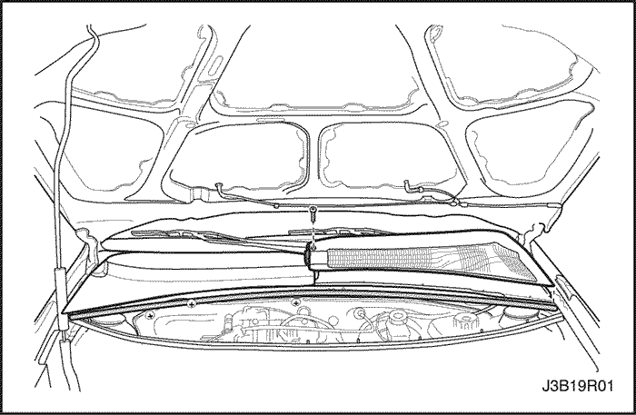


Rejilla de ventilación del capó
(Se ilustra el volante a la izquierda; el volante a la derecha es similar)
Procedimiento de desmontaje
- Levante el capó y sujételo con la varilla de soporte.
- Quite el burlete.
- Quite los brazos del limpiaparabrisas. Consulte la Sección 9D, Sistemas de Limpiaparabrisas/Lavado
- Quite los tornillos de la rejilla de ventilación del capó y la rejilla de dos piezas.
Procedimiento de Instalación
Aviso: Los metales diferentes que están en contacto entre sí, son rápidamente afectados por la corrosión. Asegúrese de utilizar los elementos de fijación adecuados para evitar corrosión prematura.
- Instale la rejilla de dos piezas y los tornillos de la rejilla de ventilación del capó.
Apretar
Apriete los tornillos de la rejilla de ventilación del capó a 4•NSm (35 Lb-pulgada).
- Quite los brazos del limpiaparabrisas. Consulte la Sección 9D, Sistemas de Limpiaparabrisas/Lavado
- Instale el burlete.
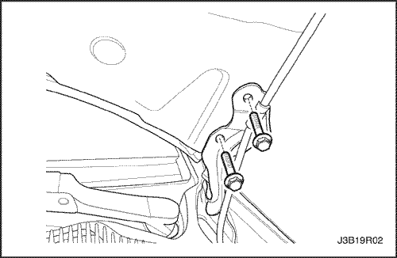
Capó
Procedimiento de desmontaje
Aviso: Instale las cubiertas protectoras sobre los guardabarros y el parabrisas para evitar daños a la pintura, el cristal y los moldeos cuando quite e instale el capó.
- Levante y sujete el capó.
- Marque la posición de la bisagra en el capó para facilitar la alineación durante la instalación.
- Quite los tornillos que retienen el capó a ambas bisagras.
- Con la ayuda de otro técnico, quite el capó de las bisagras.
Procedimiento de Instalación
- Con la ayuda de otro técnico, coloque el capó en el lugar marcado durante el desmontaje.
Aviso: Los metales diferentes que están en contacto entre sí, son rápidamente afectados por la corrosión. Asegúrese de utilizar los elementos de fijación adecuados para evitar corrosión prematura.
- Instale los dos tornillos que aseguran el capó a cada una de las bisagras.
Apretar
Apriete los tornillos del capó a la bisagra a 27 N•m (20 Lb-Ft).
- Inspeccione el capó para comprobar su alineación adecuada.
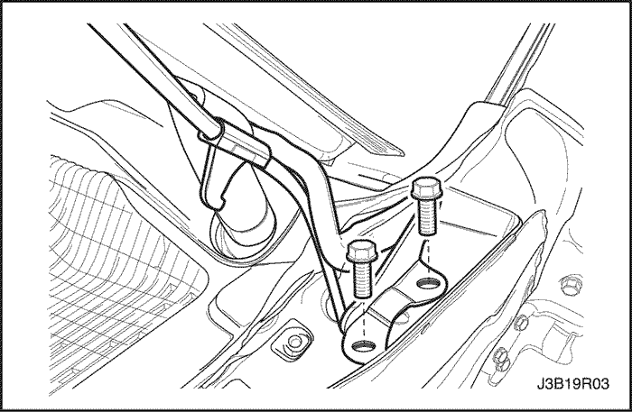
Bisagras del capó
Procedimiento de desmontaje
- Quite el capó. Consulte "Capó" en esta sección.
- Quite los tornillos y la bisagra.
Procedimiento de Instalación
Aviso: Los metales diferentes que están en contacto entre sí, son rápidamente afectados por la corrosión. Asegúrese de utilizar los elementos de fijación adecuados para evitar corrosión prematura.
- Instale la bisagra con los tornillos.
Apretar
Apriete los tornillos de la bisagra a 27 N•m (20 Lb-Ft).
- Instale el capó. Consulte "Capó" en esta sección.
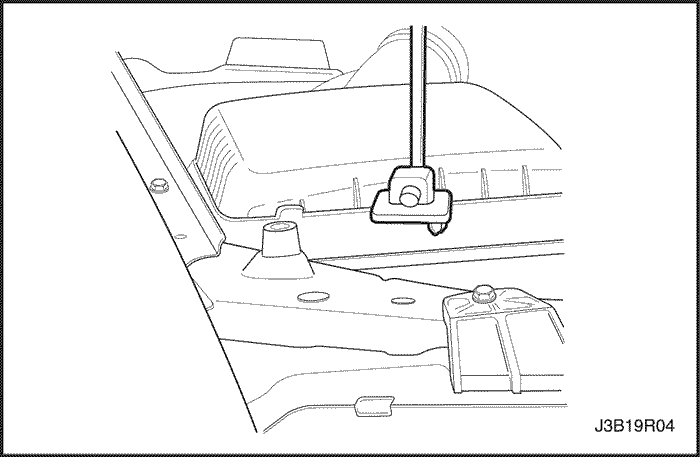
Varilla de soporte del capó
Procedimiento de desmontaje
- Sujete el capó en su posición de abierto.
- Quite la varilla de soporte del capó, tirando suavemente de la base situada en el soporte del radiador.
Procedimiento de Instalación
- Instale la varilla de soporte del capó volviendo a acoplar la base en el soporte del radiador.
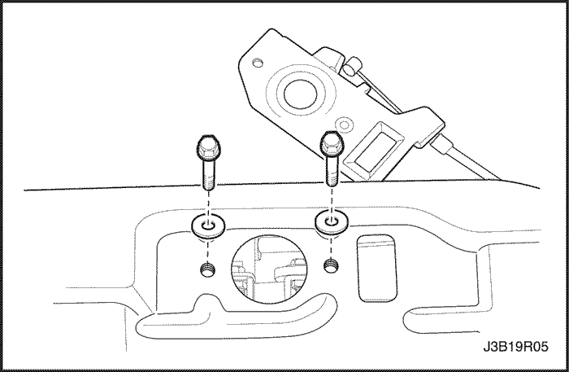
Cerradura auxiliar del capó
(Se ilustra el volante a la izquierda; el volante a la derecha es similar)
Procedimiento de desmontaje
- Abra el capó.
- Marque la posición de la cerradura del capó en el soporte del radiador para facilitar la alineación durante la instalación.
- Quite los tornillos y la cerradura del capó.
Procedimiento de Instalación
Aviso: Los metales diferentes que están en contacto entre sí, son rápidamente afectados por la corrosión. Asegúrese de utilizar los elementos de fijación adecuados para evitar corrosión prematura.
- Coloque la cerradura del capó en el lugar marcado durante el desmontaje.
- Instale la cerradura del capó con los tornillos.
Apretar
Apriete los tornillos de la cerradura del capó a 8 N•m (71 Lb-pulgada).
Cable de apertura de la cerradura del capó
(Se ilustra el volante a la izquierda; el volante a la derecha es similar)
Procedimiento de desmontaje
- Quite los tornillos y la manilla de liberación del capó del tablero de instrumentos.
- Abra el capó.
- Quite los tornillos y la palanca de liberación de la cerradura del capó.
- Quite el cable del conjunto de liberación de la cerradura del capó.
- Quite el cable del compartimento del motor.
Procedimiento de Instalación
Aviso: Los metales diferentes que están en contacto entre sí, son rápidamente afectados por la corrosión. Asegúrese de utilizar los elementos de fijación adecuados para evitar corrosión prematura.
- Instale la rejilla del radiador con los tornillos.
- Instale el cable en la manilla de liberación de la cerradura del capó.
- Instale la manilla de liberación del capó en el tablero de instrumentos con los tornillos.
Apretar
Apriete los tornillos de la manilla de liberación del capó a 4 N•m (35 Lb-pulgada).
- Instale el cable en el conjunto de liberación de la cerradura del capó.
- Instale el conjunto de liberación de la cerradura del capó con los tornillos.
Apretar
Apriete los tornillos de la cerradura del capó a 8 N•m (71 Lb-pulgada).
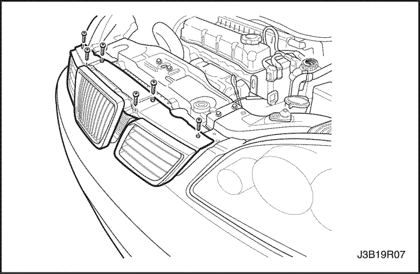
Rejilla del radiador (Sedán, Coche familiar)
Procedimiento de desmontaje
- Abra el capó.
- Quite los tornillos y las pinzas de la zona inferior de la rejilla del radiador.
Procedimiento de Instalación
- Instale la rejilla del radiador con los tornillos y las pinzas.
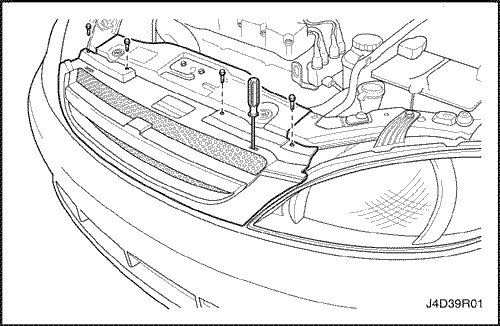
Rejilla del radiador (Portón trasero)
Procedimiento de desmontaje
- Abra el capó.
- Retire los tornillos.
- Extraiga las pinzas con un destornillador.
Procedimiento de Instalación
- Instale la rejilla del radiador con los tornillos.
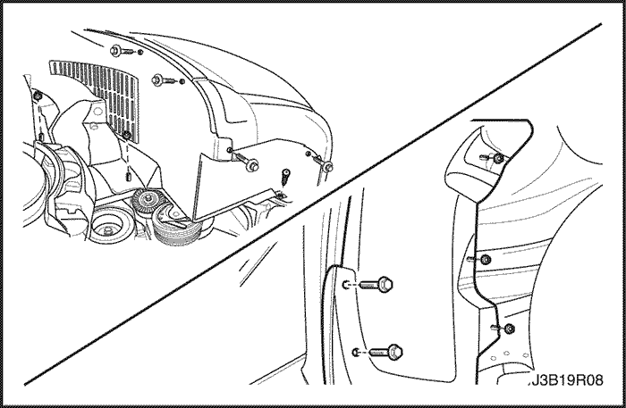
Guardasalpicaduras de hueco de rueda delantera
Procedimiento de desmontaje
- Eleve y apoye debidamente el vehículo.
- Quite la rueda delantera. Consultar la sección 2E, neumáticos y ruedas.
- Quite el guardabarros delantero. Consulte Sección 9M, Guarnizado exterior.
- Quite los tornillos y el guardasalpicaduras de hueco de rueda delantera.
Procedimiento de Instalación
- Instale los tornillos y el guardasalpicaduras de hueco de rueda delantera.
Apretar
Apriete los tornillos del guardasalpicaduras de hueco de rueda delantera a 2 N•m (18 Lb-pulgada).
- Instale el guardabarros delantero. Consulte Sección 9M, Guarnecido exterior.
- Instale la rueda delantera. Consultar la sección 2E, neumáticos y ruedas.
- Baje el vehículo.
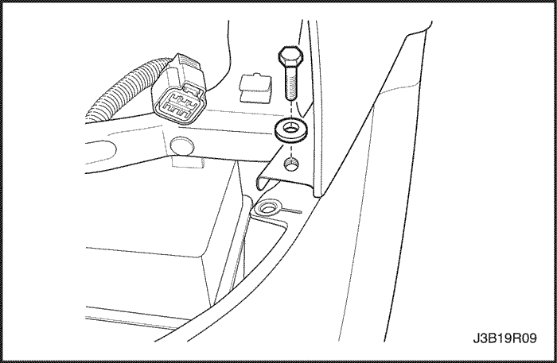
Guardabarros
Procedimiento de desmontaje
- Quite el guardasalpicaduras de hueco de rueda delantera. Consulte "Guardasalpicaduras de hueco de rueda delantera" en esta sección.
- Cambie de lugar el faro delantero.
- Quite los tornillos que aseguran la facia delantera al guardabarros.
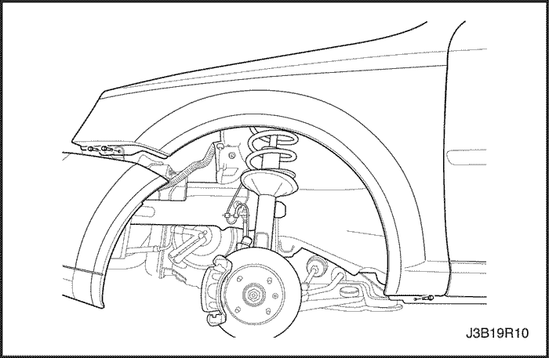
- Vuelva a colocar la facia delantera.
- Quite los tornillos del guardabarros situados detrás de la facia delantera.
- Quite los tornillos situados en la base del guardabarros.
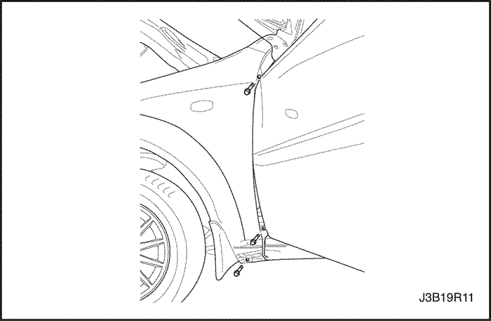
- Abra la puerta delantera y quite el perno situado en la base del montante A.
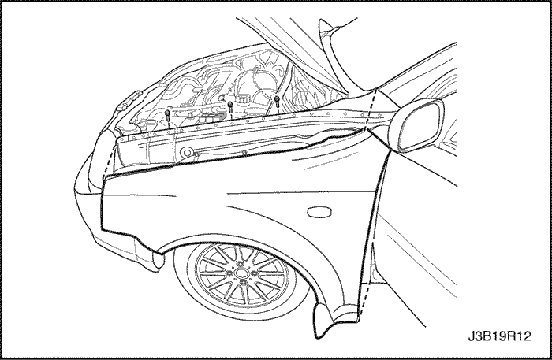
- Vuelva a colocar el burlete de la rejilla de ventilación del capó.
- Quite los tornillos superiores del guardabarros y el propio guardabarros.
Procedimiento de Instalación
Aviso: Los metales diferentes que están en contacto entre sí, son rápidamente afectados por la corrosión. Asegúrese de utilizar los elementos de fijación adecuados para evitar corrosión prematura.
- instale el guardabarros con los tornillos superiores del guardabarros.
Apretar
Apriete los tornillos superiores del guardabarros a 10 N•m (89 Lb-pulgada).
- Vuelva a colocar el burlete de la rejilla de ventilación del capó en su posición original.
- Instale el perno en la base del montante A.
Apretar
Apriete el perno del guardabarros del montante A a 10 N•m (89 Lb-pulgada).
- Instale los tornillos en la base del guardabarros.
Apretar
Apriete los tornillos inferiores del guardabarros a 10 N•m (89 Lb-pulgada).
- Instale los tornillos del guardabarros delantero situados tras la facia delantera.
Apretar
Apriete los tornillos del guardabarros delantero a 10 N•m (89 Lb-pulgada).
- Instale la facia delantera en su posición original.
- Instale los tornillos que aseguran la facia delantera al guardabarros.
Apretar
Apriete los pernos de facia delantera a guardabarros a 2,5 N•m (22 Lb-pulgada).
- Instale el faro delantero en su posición original.
- Instale el guardasalpicaduras de hueco de rueda delantera. Consulte "Guardasalpicaduras de hueco de rueda delantera" en esta sección.
DESCRIPCIÓN GENERAL Y FUNCIONAMIENTO DEL SISTEMA
Extremo delantero de la carrocería
Este vehículos presenta una carrocería unificada con un conjunto de bastidor que soporta el motor y la caja de cambios. Los paneles del guardabarros y el soporte del radiador son también partes integrales de la carrocería.